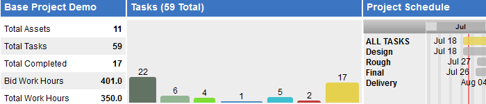
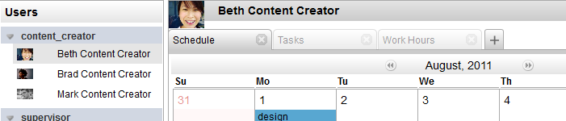
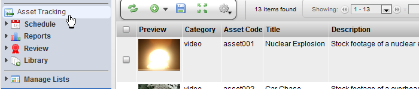
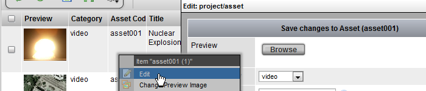
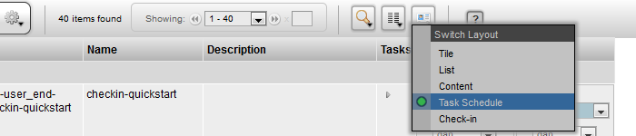
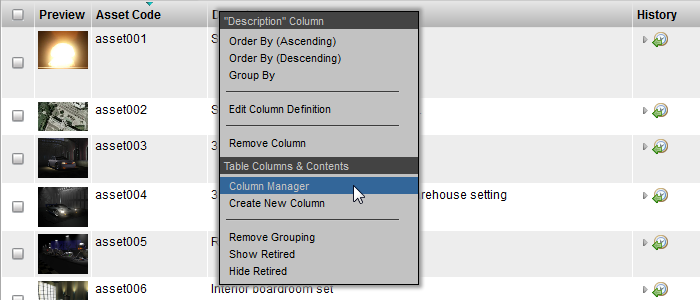

Views in TACTIC are the main widgets used to display the items in a project. The display of these items vary depending on the view. Views are typically accessed through the sidebar. TACTIC tools and widgets such as tables, dashboards, edit panels and custom HTML interfaces, allow the end user to interact and alter the viewing experience.
TACTIC Views are extremely customizable and can be configured to meet the specific needs and workflow of the end user. Views also provide quick navigational options such as Search and Grouping, which can be embedded in various layout styles within a panel interface such as a Dashboard.
Below are some examples of the more common widgets used for views in TACTIC.
Table

Dashboard

Edit Panel

Calendar

Loading Views
To get started with view, first load a view from the sidebar in your project. Ideally you will have a view with some items available.

If the view is a Table based view (which is the most common), you will notice that there is an arrangement of columns with tools and data.
Inserting and Editing Items
To insert a new item, click the button in the View Shelf

To edit items, click the cells in the table, or right click on an item and choose "Edit".

Gear Menu Options
Selecting items allows for certain actions to become available in the View Gear Menu. For example "Tasks → Add Tasks to Selected"

View Layouts
To change the layout of the view, click the Layout Switch button. Each view provides different information and tools.

Add/Remove Columns
To Add Columns to the view, click the Column Manager button in the shelf or, right click in the table header and choose "Column Manager"

or
